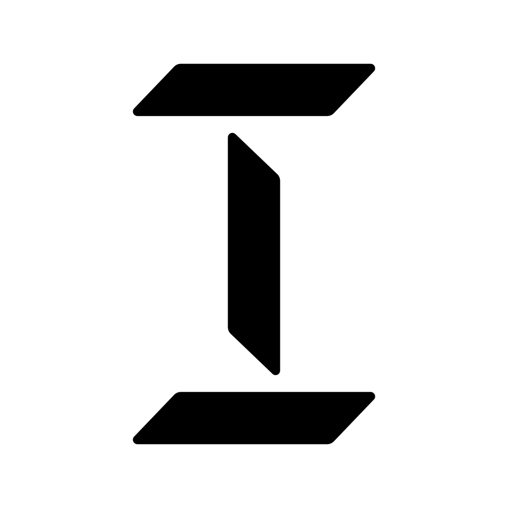
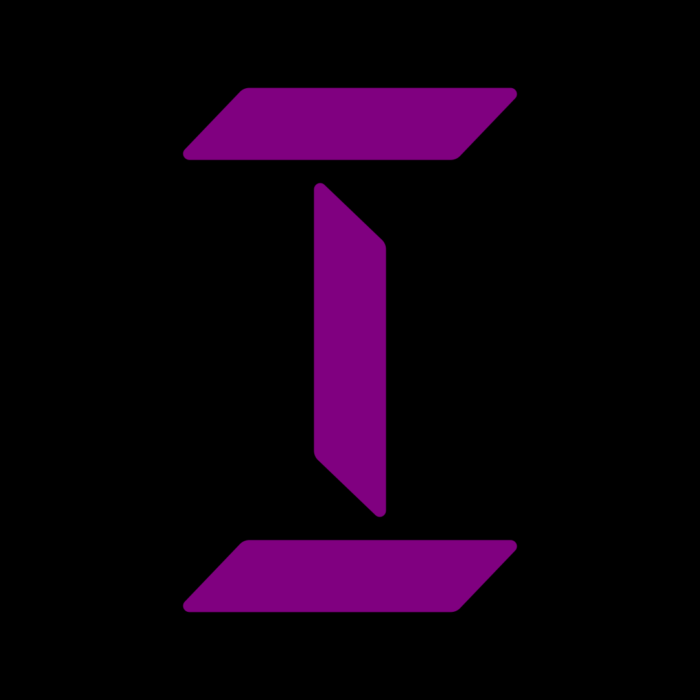
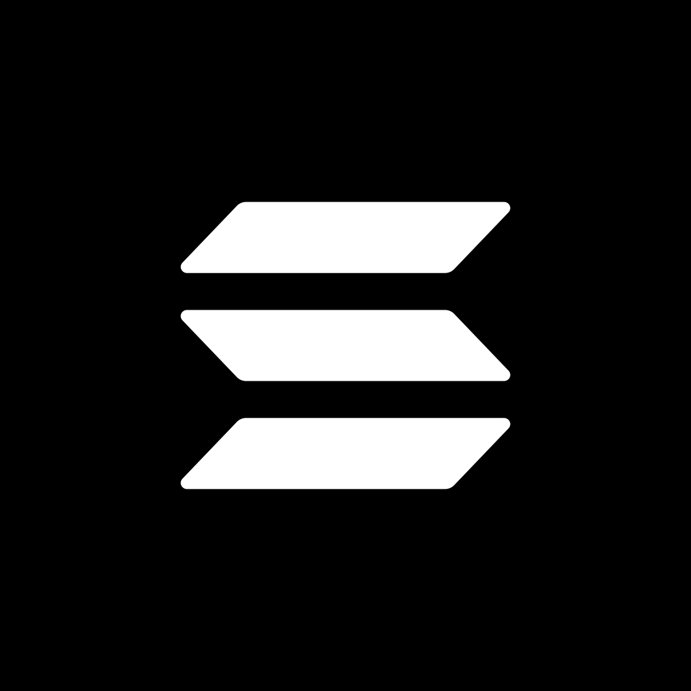

inevitable
weekly note on Solana in AU/NZ
The mark is a capital I. The I is the display character.
It is three copies of one official Solana parallelogram — the top bar of solanaLogoMark.svg. Rounding is kept. There is no gradient.
Top and bottom are the same bar, same way up. The stem is that bar stood on end. Signed off 1 September 2026.
Default is ink on ground. Invert is allowed. The mark is monochrome only.

Keep one stem-width of field on all sides. Stem-width is the bar’s short side: 22 in bar units, 112.2px on the 1080 canvas.
Minimum 48px square. Never below 32px.
The mark is black or white. Nothing else.
Never on the mark. Never as a gradient I. One at a time.
Forbidden (Milysec lab): #08D592 #9C32DF #070A08 #0C100D.
One family. Inter 400, 500, 600 from Google Fonts.
The wordmark is lowercase inevitable — Inter 600, slight negative tracking.
inevitable
Inter 600 · tracking −0.03em
System ui-monospace only for hex and sizes, as here.
Forbidden: MoonWalk, Bricolage Grotesque, EconoSans, Monoton, Orbitron, Geist.
Three copies, original bottom, ink on ground. Do not recolour, stack, or flip.


The newsletter avatar is the 1080 square. File: logo/mark-on-black.png.
1080 × 1080